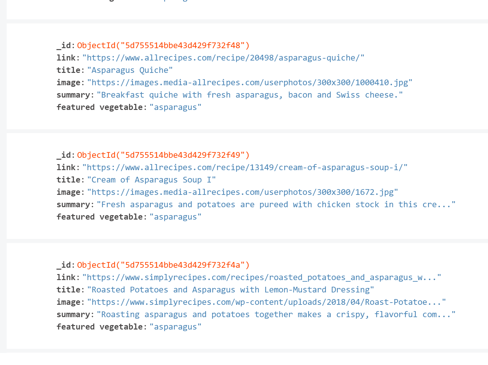
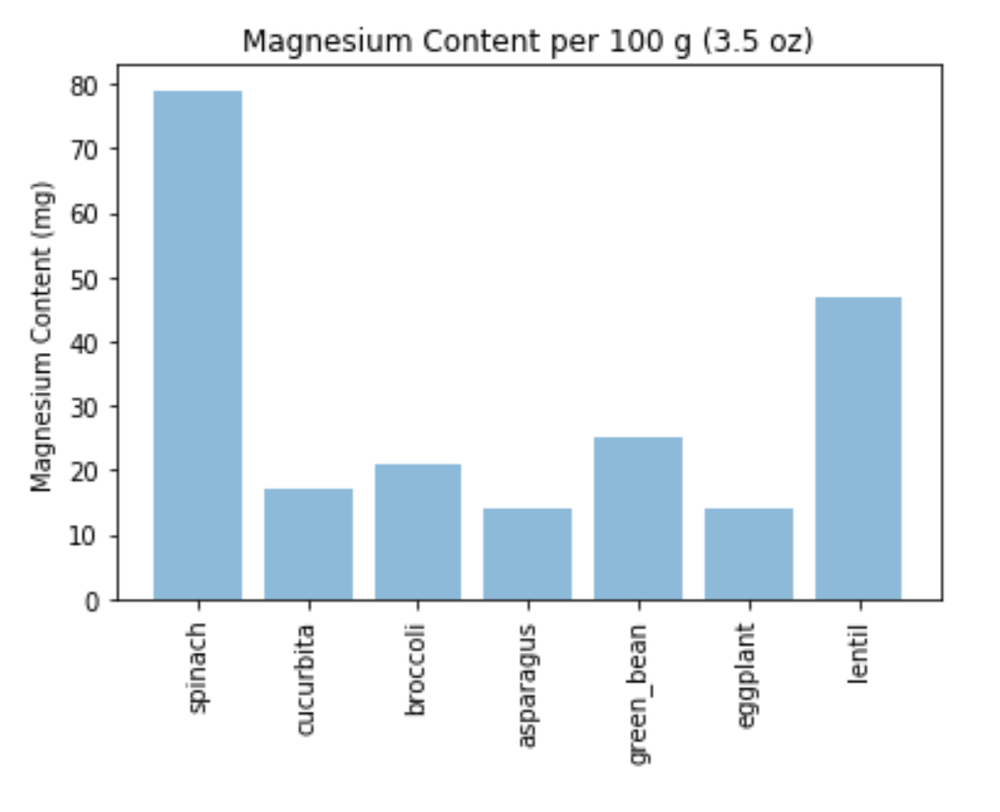
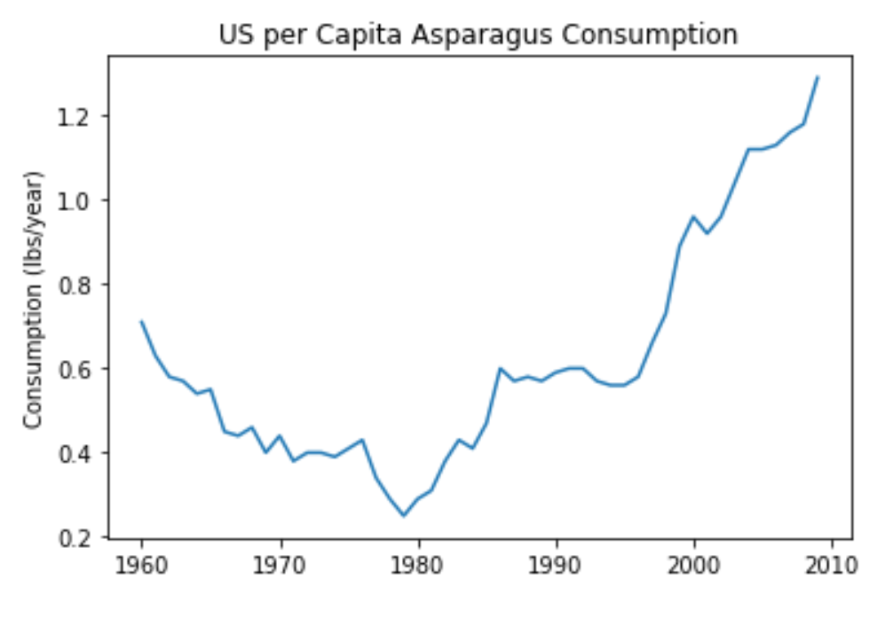
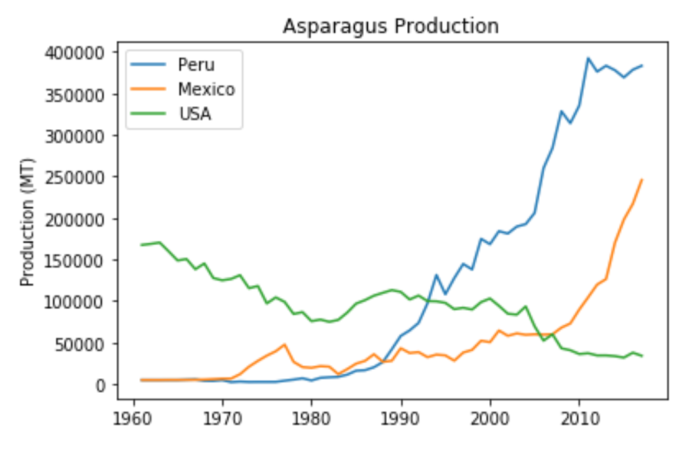
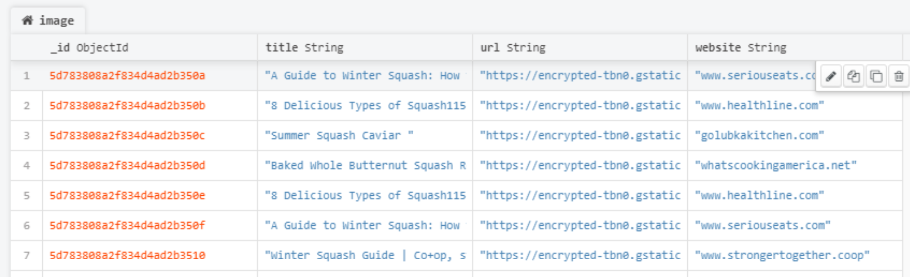

The objective was to extract recipes for our featured vegetables from multiple websites and thereafter create a MongoDB collection containing said recipes.
The data extraction process required an analysis of the html output of two sites namely, allrecipes.com and simplyrecipes.com. The html text was acquired using the python 'requests' library. The text itself was parsed using 'Beautiful Soup' once a basic understanding of the underlying html used by each site had been acquired.
The continued scraping and mis-scraping process brought about some unforseen problems with the Bitdefender anti-viral software. In addition, the server used for the simplyrecipes.com site did not entertain numerous searches for the same vegetable and is now regularly returning status code 403 'Forbidden'.
The results of the scrape were subsequently transformed into a series of recipe dictionaries, with each dictionary containing a field for a title, a summary, a URL for an image of the finished recipe as well as a URL that contains content for the recipe's method. In addition, a 'featured vegetable' field identifies the featured vegetable that is associated with the recipe.
Very little data cleaning was required after data extraction, save for the trimming of a few strings.
A 'Recipes' collection was added to an ETL database in MongoDB with the use of the 'pymongo' library. Each document in the collection corresponds to one of over 100 vegetable-related recipes that were collected during the data extraction phase.
The objective was to extract nutritional information for our featured vegetables from various pages at wikipedia and subsequently create a MongoDB collection containing the nutritional data.
The data extraction process made use of some scraping functionality from the 'pandas' library, namely 'read_html'. The read_html function returns a data frame for each of the tables contained on the relevant web-page. The initial task was to identify the table from this list whose first column name contained the word "Nutritional."
Each dataframe that was created in this way required some cleaning to removed 'na' data as well as rows of data that contained only uninformative data that were not germane to vegetables and nutrition.
The result of this process was a list of dataframes corresponding to each of our featured vegetables, plus a few more. The nutritional data was then aggregated into a single master dataframe by way of a sequence of inner joins using the pandas 'merge' function - each column of the master dataframe contained data pertaining to a certain vegetable. This enabled the juxtaposition of data that was shared by all of the source tables, and thus facilitated comparison of nutritional aspects of all featured vegetables.
The next task was to use the pandas 'to_dict' function to convert each column of the data frame into a dictionary that could then be used to add data to MongoDB. A 'Nutrition' collection was added to an ETL database in MongoDB with the use of the 'pymongo' library. Each document in the collection corresponds to a different vegetable, the vegetable itself identified by the 'Name' field.
The objective was to search for consumption and production data for asparagus from various pages and subsequently create a MongoDB collection containing datasets that could be used for subsequent graphing.
The main source of information concerning asparagus production was the website www.factfish.com. The data extraction process made use of some scraping functionality from the 'pandas' library, namely 'read_html'. The read_html function returns a data frame for each of the tables contained on the relevant web-page. The data on the relevant webpage was organized in such a way that it was always the case that the second dataframe contained the production data. No cleaning or data preparation was required after the call to read_html.
The source of information for asparagus consumption was from the USDA - ERS report 'AsparagusStats2010.pdf'. The USDA website contained tables stored in Excel spreadsheets, from which CSV files could be exported and subsequently processed by the Pandas library. A number of cleaning operations were required to identify the correct data. This data was not scraped, but was instead manually downloaded.
Two sets of data were created. Firstly, the production of asparagus since 1961 for selected countries (Mexico, USA, Peru and China) was stored in a Pandas dataframe. Secondly, the production of various vegetables in the USA since 1961 was stored in a Pandas dataframe. The matplotlib library was used to create line plots of asparagus production vs. year. It became evident that asparagus production in the USA has decreased steadily since 1961 to a fraction of original output. This was not a pattern that was repeated for the other featured vegetables. Furthermore, the line plot of per capita consumption of asparagus in the USA suggests that demand has actually increased steadily since 1980. It is therefore safe to conclude that the decrease in asparagus production in the USA is not fuelled by lack of demand.
The next task was to use the pandas 'to_dict' function to convert each column of the data frame into a dictionary that could then be used to add data to MongoDB. A little care was required during the conversion process as the MongoDB 'insert' functionality does not accept dictionaries (or even sub-dictionaries) that have integer keys. This problem was circumvented using the 'list' option for the 'to_dict' function. A 'Consumption_And_Production' collection was added to an ETL database in MongoDB with the use of the 'pymongo' library. Each document in the collection corresponds to a different dataset that was used for each of the line plots. The nature of the plot is identified by the 'Title' field.
 The objective was to search for images (or links to images) for our featured vegetables and subsequently to create a MongoDB collection containing posts that referred to said images.
The source of the images was www.google.com. The Google API was used in conjunction with the python 'requests' library to obtain html from a URL query. Fo example, to search for images of squash: https://www.google.com/search?tbm=isch&q=squash. The 'Beautiful Soup' library was used to parse the returned html.
The result of the parsing was a 'post' that was cfeated for each image tht was returned in the html. The post contains (i) a summary description of the image, (ii) a URL to the image itself and (iii) a URL for the website that contains the image. Each post is represented by a dictionary containing the keys, "title", "URL" and "website". Each post was added to a list of posts called 'list-image'. A pandas dataframe was created from the image list and subsequently exported to a CSV file (IG.csv) using the pandas 'to_csv' function.
The posts contained in list_image were added to MongoDB collection called 'image' using the 'insert_many' command.
